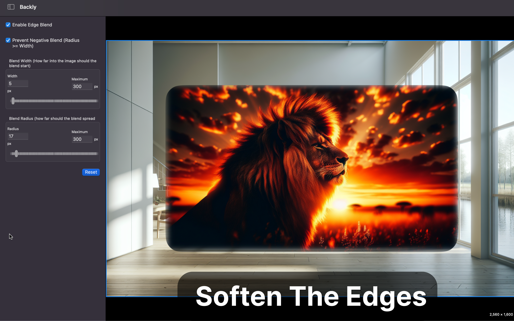
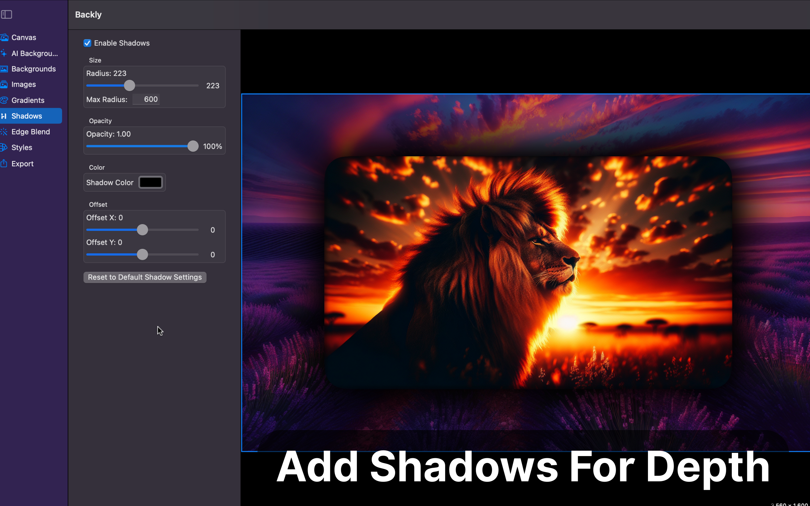
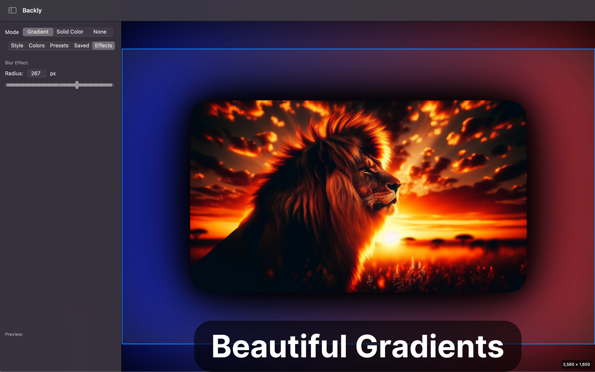
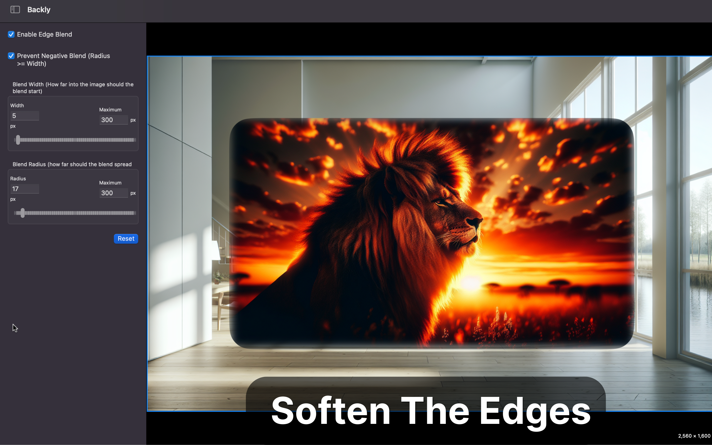
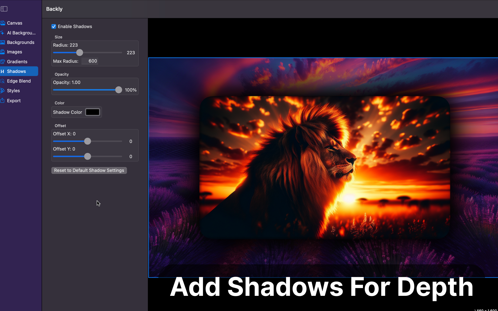
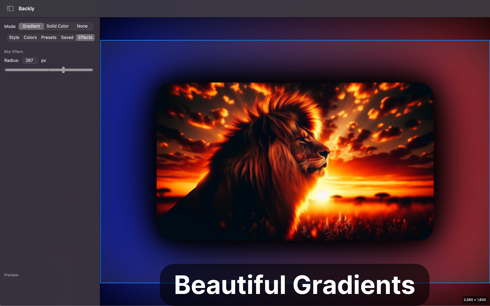

See Backly in Action
Transform Your Images
The perfect tool for designers and developers who need custom-sized background images with beautiful gradients and overlay elements.
Screenshots
 





Key Features
- Precise Canvas Sizing - Control dimensions with sliders, text inputs, or presets
- Customizable Gradients - Linear, radial, and angular gradients with color and blur control
- Image Import & Layering - Drag-drop or import images, resize, and reposition with ease
- Shadow Effects - Add customizable shadows with fine-tuned control
- Edge Blend - Smoothly blend image edges into the background
- Export Options - Save your creations in various formats
- AI Background Generation - Create unique backgrounds with AI assistance
Powerful Tools for Creative Professionals
Precise Canvas Sizing
Control dimensions with pixel-perfect precision using sliders, direct text input, or choose from common presets. The default canvas size is 2560x1600 (Mac 16:10).
Customizable Gradients
Create stunning linear, radial, and angular gradients. Fine-tune colors, positions, angles, and add blur effects to achieve exactly the look you want.
Image Import & Layering
Simply drag and drop images onto the canvas or import them via file dialog. Easily resize using handles or precise inputs, and reposition by dragging.
Shadow Effects
Add depth with highly customizable shadows. Adjust blur radius, color, opacity, and offset to create the perfect look for your designs.
Edge Blend
Professionally blend the edges of imported images into the background. Control blend width and radius for seamless integration.
Flexible Export
Save your compositions in various image formats with customizable quality settings, ready to use in your projects.
Why Backly?
Backly is designed for both designers and developers who need to quickly create custom-sized background images with professional-quality results. Whether you're designing UI mockups, creating marketing materials, or preparing assets for your application, Backly provides the precision tools you need without the complexity of full-featured image editors. With its intuitive interface and focus on background creation, you'll save time and achieve consistent, beautiful results.
Get Backly - AI Photo Backgrounds
Download the latest version and enhance your design workflow today!
Requires macOS 12.0 or later.